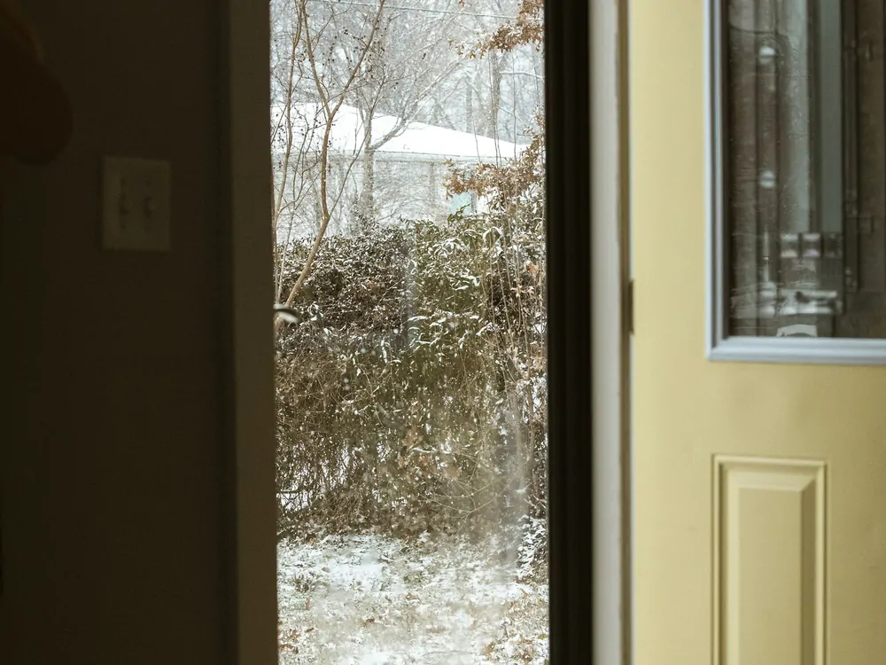

Seal your door with a sweep
Weatherstripping and a door sweep close the gap most exterior doors leak through.
Mostly comes off at move-out
Under $25
1 to 2 hours
Medium impact

What you need
- Adhesive-backed foam or V-strip weatherstripping
- A door sweep sized to your door's width
- A screwdriver, if your sweep mounts with screws rather than adhesive
Where to get it: ordered online for delivery, or in person at the West Lebanon stores, reachable on the fare-free Advance Transit bus. Where to get it has the addresses and the routes.
Steps
- Send your landlord a quick written message naming the two items and asking to install them.
- Close the door and find where light or a draft comes through the frame.
- Clean the frame where the weatherstripping will stick.
- Press the strip along the top and side gaps, trimming it to length.
- Attach the door sweep along the bottom edge, screws or adhesive depending on the kit.
- Open and close the door once to check it still latches properly.
What if my landlord says no
Ask whether they would rather do it themselves, since it is a cheap, quick fix that benefits the unit either way. A rolled towel at the base of the door is a fully reversible stopgap that needs no permission and no adhesive at all.
Sources
Last reviewed 2026-08-18.